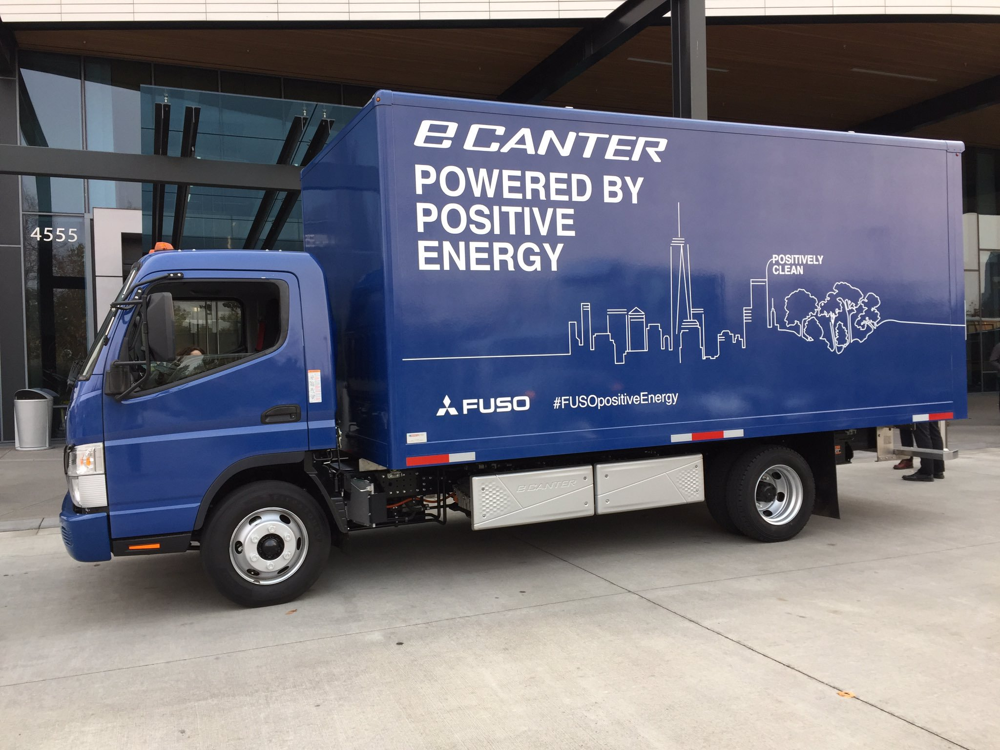
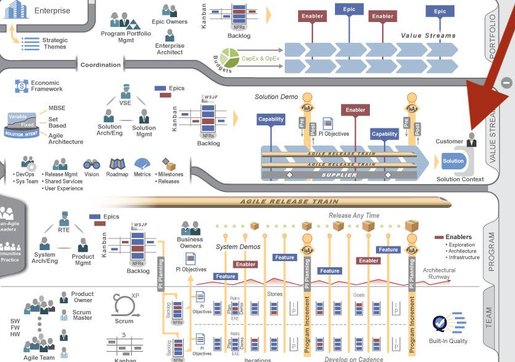

<!doctype html>
<html>
	<head>
		<meta charset="utf-8">
		<meta name="viewport" content="width=device-width, initial-scale=1.0, maximum-scale=1.0, user-scalable=no">

		<title>Quality Talks</title>

		<link type="image/x-icon" rel="shortcut icon" href="./img/tdh_logo.png" />

		<link rel="stylesheet" href="css/reset.css">
		<link rel="stylesheet" href="css/reveal.css">
		<link rel="stylesheet" href="css/theme/serif.css">

		<!-- Theme used for syntax highlighting of code -->
		<link rel="stylesheet" href="lib/css/monokai.css">

		<!-- Printing and PDF exports -->
		<script>
			var link = document.createElement( 'link' );
			link.rel = 'stylesheet';
			link.type = 'text/css';
			link.href = window.location.search.match( /print-pdf/gi ) ? 'css/print/pdf.css' : 'css/print/paper.css';
			document.getElementsByTagName( 'head' )[0].appendChild( link );
		</script>
	</head>
	<body>
		<div class="reveal">
			<div class="slides">
				<section data-markdown>
					<script type="text/template">
						### Enabling Code Quality at TDH - The journey

						
					</script>
				</section>
				<section data-markdown>
					<script type="text/template">
						### About me

						<div class="row">
							<div class="column" style="float: left; width: 30%">
								
							</div>
							<div class="column" style="float: left; width: 70%">
								<ul style="list-style-type:none">
									<li></li>
									<li>10+ years doing data development</li>
									<li>GitHub: <a href="https://github.com/necosta">necosta</a></li>
									<li>Twitter: <a href="https://twitter.com/NelsonCosta85">@nelsoncosta85</a></li>
								</ul>
							</div>
						</div>
					</script>
				</section>
				<section data-markdown data-separator="^\n---\n$" data-separator-vertical="^\n--\n$">
					<script type="text/template">
						### Daimler Trucks ...

						

						--

						### And Buses

						

						--

						### From past...

						

						--

						### To Future

						<div class="row">
							<div class="column" style="float: left; width: 53%">
								
							</div>
							<div class="column" style="float: right; width: 47%">
								
							</div>
						</div>
					</script>
				</section>
				<section data-markdown>
					<script type="text/template">
						### What do we do at TDH?

						> Within Daimler Trucks & Buses, we collaborate on exciting projects,
						exploring the potential in telemetry data and delivering services that will
						create a more sustainable future for transportation
					</script>
				</section>
				<section data-markdown data-separator="^\n---\n$" data-separator-vertical="^\n--\n$">
					<script type="text/template">
						### TDH Timeline

						* Nov 2018: We started!

						--

						* Feb 2019: Lisbon workshop

						--

						* May 2019: First delivered projects

						--

						* Sep 2019: Multiple exciting projects on the pipeline
					</script>
				</section>
				<section data-markdown>
					<script type="text/template">
						### Our Principles

						* Develop software with foundations
						* Apply IaC (Infrastructure-as-Code)
						* Fight "powerpoint-driven-development"
					</script>
				</section>
				<section data-markdown>
					<script type="text/template">
						### The team

						> Every great company is built by great people (Sara Gorjão)

						* **Data** Science, **Data** Engineering and **Software** Engineers

					</script>
				</section>
				<section data-markdown>
					<script type="text/template">
						### Tech Stack

						* Java and Scala
						* Python
						* Terraform
					</script>
				</section>
				<section>
					<section data-markdown>
						<script type="text/template">
							### Everyday Challenges
						</script>
					</section>
					<section data-markdown>
						<script type="text/template">
							#### Navigate on a speed boat around an oil tanker
						</script>
					</section>
					<section data-markdown>
						<script type="text/template">
							#### Finding the customer can be a challenge

							
						</script>
					</section>
					<section data-markdown>
						<script type="text/template">
							#### Understanding data...

							
						</script>
					</section>
					<section data-markdown>
						<script type="text/template">
							#### ...And understanding data science is an exploratory science

							<div class="row" style="display:block; margin:auto; width: 30%">
							<video>
								<source data-src="img/data_science_says_no.mp4" type="video/mp4" />
							</video>
							</div>
						</script>
					</section>
				</section>
				<section data-markdown>
					<script type="text/template">
						### Metrics (How to measure quality)

						* Implicit?
						* Reports (pull requests, source-d, ...)
						* Demos/Retros
						* Retention
					</script>
				</section>
				<section data-markdown>
					<script type="text/template">
						### Thank you!
						[GitHub Repo](https://github.com/necosta/quality-talks)

						---

						Have a quality TDH biscuit :)
						<div class="row" style="display:block; margin:auto; width: 50%">
							
						</div>
					</script>
				</section>
			</div>
		</div>

		<script src="js/reveal.js"></script>

		<script>
			// More info about config & dependencies:
			// - https://github.com/hakimel/reveal.js#configuration
			// - https://github.com/hakimel/reveal.js#dependencies
			Reveal.initialize({
				controls: true,
				progress: true,
				center: true,
				slideNumber: true,
				history: true,
				autoPlayMedia: true,
				dependencies: [
					{ src: 'plugin/markdown/marked.js' },
					{ src: 'plugin/markdown/markdown.js' },
					{ src: 'plugin/notes/notes.js', async: true },
					{ src: 'plugin/highlight/highlight.js', async: true }
				]
			});
		</script>
	</body>
</html>
